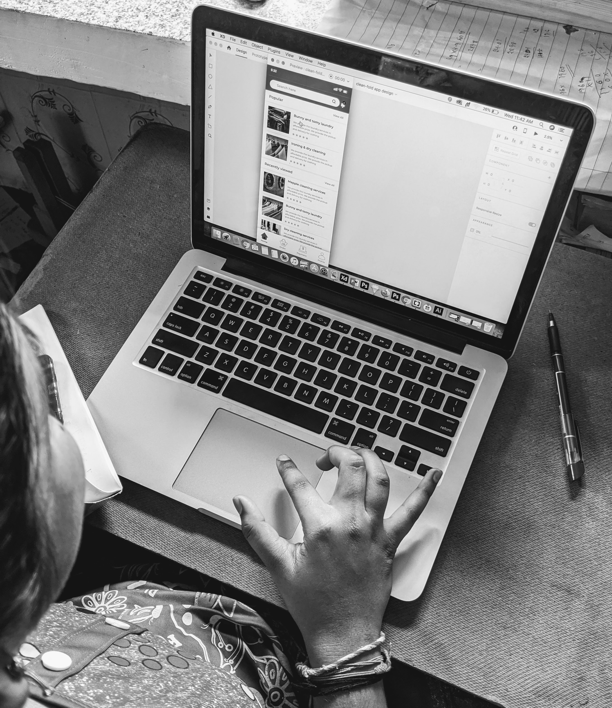
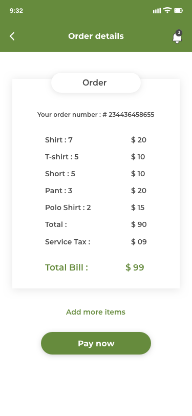
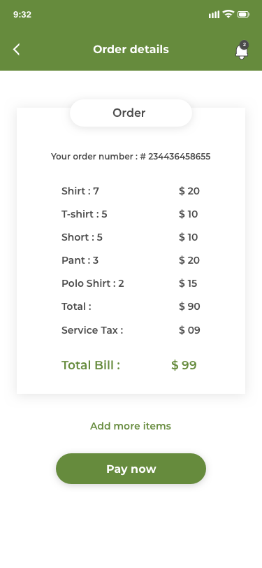

CLEAN FOLD: mobile App design[ UX design process]
In the city of Hyderabad [India] there are so many people using the manual method for laundry service for everyday life. Laundry service providers provide different kinds of services like cleaning, washing clothes, ironing and folding clothes, pick up the clothes and provide the service and deliver to their owners, also use payment for the service also manual.
Since, I have got an idea about the laundry app design for the laundry service app that makes it easy to use for the customers and laundry service providers. I have designed the Clean Fold mobile App design, the app provides different services for customers and clients like pickup the clothes, provide the laundry service and deliver to their owners, make payment through online. Also the user can view the tracking of the delivery clothes.
Clean fold laundry service mobile app design is a project of the UI/UX design specialization course through the CalArts & Coursera.
PROJECT DETAILS:
CHALLENGE:
To create a mobile app design that is easy to use for the laundry service providers and customers.
TIMELINE: 4 Weeks
ROLE:
As a designer, I have to create the user friendly mobile app. I have to research the existing laundry app, research on service providers and customers and their requirements and needs, goals. Finally create the clickable prototype for the mobile app.
METHODS:
User research, user personas, mappin the content and interaction, User testing, creating sitemap, paper prototype, visual design, iconography, graphic design, wire-frame, clickable prototype for mobile app.
TOOLS :
Pen & Paper, photoshop, illustrator, Sketch App, Adobe XD, Adobe Illustrator.
PROCESS:
USER RESEARCH:

In the user research process, I have started to start research and observe existing apps and note down the user requirements and user goals. After that, I have prepared questionnaires and interviewed laundry service providers and customers. With their permission, I have recorded the user pain points and goals.
What I have found from user research?
- Still there are so many users using the manual method to count the clothes and note down in the book.
- The laundry service providers still use the record book to write down the client name, details, location and number of clothes and service for the clothes.
- The customer paying the cost of the service manually.
- The customer is getting trouble finding the contact details of the laundry service provider.
- The customer is getting trouble knowing about the cost of the service.
USER PERSONAS:
User personas help me to understand the user pain points and user goals. I have created the customer as well as laundry service provider personas. From this personas I have noted down the customer requirement and laundry service provider requirement.
Persona of two different people
From the personas, I have write down client needs and User needs. The mobile app needs to enable the user and client to:
Customer requirements:
- Customers can view the different service lists and providers.
- Customers would like to book the pickup service through online with their flexible time.
- Customers would like to view the cost of the different service.
- Customers still use the manual method to note down the number of clothes and delivery date. Since they want an easy way to note down the number of clothes and delivery date.
- They are using a manual method to pay the service. They would like to pay through the online service that is easy for them.
Laundry service provider [Client] requirements:
- They are using the cell phone method to contact the customers. They would like an easy method for contacting customers and store the customer details easily and automatically.
- They are using the manual book record for the customer details like contact information, location, number of clothes for the particular service and coast.
- They contact the customer and then deliver the clothes. They would like to use the easy method to update the delivery of the clothes to their customers.
- They would like an easy payment method for the customers.
MAPPING CONTENT & INTERACTION, USER TESTING, CREATING SITEMAP:
Mapping the content and the interaction is useful for organizing the content and creating a functional design for the mobile app. Using the mapping the content and interaction helps me to create a sitemap for the mobile app. Creating the sitemap is a way that I have created the easy navigation for the mobile app which helps me to create a paper prototype of the mobile app design.

PAPER PROTOTYPE & USER TESTING:

From the sitemap, I have created the paper prototype for the mobile app design. Then I have conducted multiple walkthroughs for the paper prototype that helps me to better understand the flow of the prototype and easy to interact with the first time user.
Then, I have conducted Nielsen's ten usability heuristics, that helps me to major and minor usability problems for users while using the app. Finally, I have conducted the user test with real users and then listed down the user problems while using the prototype.
What did I find from the user testing?
- Customers can not view all the main details of the laundry service providers.
- The details of the customer required more than easy to understand the laundry service providers like pick up and delivery location, timing for the service available, etc.
- The laundry service provider needs to provide the cost of the service.
- User needs to know the screen that your order has been received. That helps users to know about the conformation of the service.
WIREFRAMING:
Home screen, online clothes order screen, payment, delivery update ..screens, I have created the wireframing. The wireframe of the website helps me to create the organized content and navigation of the mobile app.
Wireframe of the mobile app
VISUAL DESIGN:
Home screen, online clothes order screen, payment, delivery update ..screens, I have created the visual design of the app. The visual design of the mobile represents the look and feel of the mobile app, which includes typography, color, navigation, graphic design of the app.
Visual representation of the responsive website
LEARNINGS:
I have learned from the responsive website that,
- Visual design of the website includes image making, color palette, typography, iconography, graphic for the website. Visual design is important for the website that helps me look and feel for the website.
- Using the research process, that helps me understand how the user gets problems to order catering through online. Using the responsive website design that users can easily use the website.
- Finding the user problems and list out the client and customer requirements for the restaurant. List out the user needs and goals of the client and customer that helps me to create the sitemap and wireframe for the website.
CLICKABLE PROTOTYPE:
BACK TO PROJECTS


 
